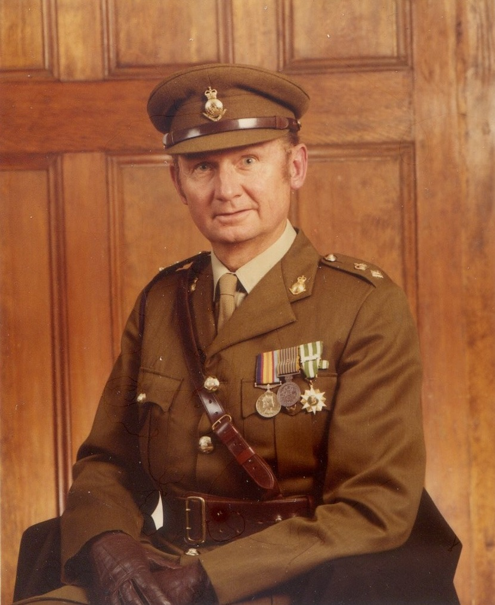
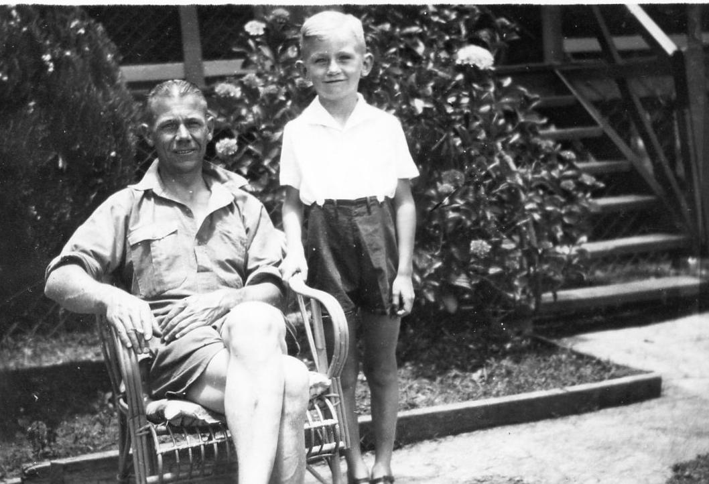

Robert Francis Skitch (Bob) was born in Perth on 2 July 1934, the only child of Robert Mason Skitch, a Forestry Department officer, and Mabel Madeline Skitch (née Magowan). He grew up in Collie, in the south-west of Western Australia, where he was known as “Junior”. In January 1945, when Bob was ten, his father was killed on the Mungalup Road.

He and his mother then moved to Perth. He attended Kent Street High School in Victoria Park, where he passed the Junior Certificate in all eight subjects, and afterwards worked on railway survey parties. He did his national service with the Royal Australian Navy in 1953 and 1954, serving as a stoker aboard the corvette HMAS Fremantle.
His mother died on 5 February 1955. Nine days later, on 14 February, he enlisted in the Army. After recruit training at Kapooka he attended the School of Survey at Balcombe, the start of a twenty-six year career in the Royal Australian Survey Corps. As a soldier-surveyor he worked in north Queensland, the Gulf country and New Ireland.
While stationed at Charters Towers he met Wendy Weight, a student nurse from Tenterfield, New South Wales. He was commissioned as a lieutenant in July 1961, and he and Wendy married at St Philip’s Church, Sydney, on 26 August 1961. They had four children: Sarah, Robert, Christopher and Elizabeth.
As an officer he raised and commanded the 1st Topographical Survey Troop, formed at Randwick, Sydney, in 1965. From May 1966 to March 1967 he led the troop’s detachment in South Vietnam, serving with the 1st Australian Task Force at Nui Dat. He was later posted to the British Army’s 84 Survey Squadron in Singapore, attended the Australian Staff College, and was senior instructor at the School of Military Survey. In 1975 he commanded Operation Sandy Hill, which completed the Corps’ 1:100,000 mapping of Queensland north of the Tropic of Capricorn.
“Sandy Hill was perhaps the largest mainland operation ever undertaken by the Corps.”
From “A personal reflection” in The Army Years, Part 5: In Command.
From 1977 to 1980 he was Commanding Officer of the Army Survey Regiment at Fortuna, Bendigo, where he brought Automap 1, the first computer-assisted mapping system used in Australia, into productive use. The Regiment’s first computer-assisted map was published in 1978. He resigned his commission in February 1981 and settled in Brisbane, where he spent nineteen years in the Queensland public service. As Deputy Director of the Division of Mapping from 1983 he redesigned the State’s 1:25,000 topographic maps and introduced hill shading to the Amazing Queensland tourist maps, which went on to win cartographic awards. He edited the Queensland Surveyors Bulletin and was president of the Australian Institute of Cartographers. He was a member of the Rotary Club of Nundah for 35 years, twice as its president, and was made a Paul Harris Fellow.
Between 1999 and 2018 he wrote the memoirs published in this archive, drawing on memory, letters and his own records. Wendy died on 26 September 2025, after 64 years of marriage. Bob died at home in Chermside, Brisbane, on 8 July 2026, six days after his ninety-second birthday. He is survived by his four children, six grandchildren and two great-grandchildren.
Military Service record
- Royal Australian Navy (National Service): service number NS 2923
- Australian Army (Royal Australian Survey Corps): service number 5/2897
Promotions are shown in bold.
| Year | Service | Where |
|---|---|---|
| 1953–54 | National service, Royal Australian Navy: HMAS Leeuwin, then stoker aboard the corvette HMAS Fremantle | Fremantle, WA |
| 1955 | Enlisted in the Royal Australian Survey Corps as a Private, 14 February. Recruit training; 7/55 Basic Survey Course | Perth · Kapooka · Balcombe |
| 1956–57 | Northern Command Field Survey Section; Project Cutlass ship–shore survey | North Queensland · New Ireland |
| 1957 | Temporary Corporal, 24 January | Kavieng, New Ireland |
| 1957 | Corporal (substantive), 11 April | Bendigo |
| 1957–60 | Army Headquarters Survey Regiment: field operations in north Queensland and the Gulf country | Bendigo · Charters Towers · Georgetown |
| 1958 | Tellurometer traverse, Charters Towers to Tennant Creek: booker on first-order angle observations | Charters Towers, Qld · Tennant Creek, NT |
| 1960 | Temporary Sergeant, backdated to 6 June | Georgetown, Qld |
| 1960 | Field operation: NCO-in-charge of the traverse party and first-order angle observer, north through the Gulf country to Borroloola | Gulf country · Borroloola, NT |
| 1961 | Lieutenant, commissioned with effect from 14 July (Short Service Commission) | Canungra, Qld |
| 1961–65 | Northern Command Field Survey Unit: field survey and Laplace astronomy | Gaythorne, Brisbane |
| 1962 | North Queensland field operation, based at Macrossan; in charge in the field after the OC, Major Spencer Snow, returned to Brisbane | Macrossan, Qld |
| 1964 | Temporary Captain, 30 November | Brisbane |
| 1965 | Captain (substantive), 14 July | Brisbane |
| 1965–66 | Officer Commanding, 1st Topographical Survey Troop (raised October 1965) | Randwick, Sydney |
| 1966–67 | Commanded the Troop detachment with the 1st Australian Task Force, 26 May 1966 to 16 March 1967 | Nui Dat, South Vietnam |
| 1966 | Operation Hardihood: 1:5,000 base plan for the Task Force Commander’s briefing, May 1966 | Nui Dat, South Vietnam |
| 1966–67 | Map annexes and photo plots for 1st Australian Task Force operations: Enoggera, Sydney 1 and 2, Hobart 1 and 2, Holsworthy, Toledo, Vaucluse, Canberra, Wollongong, Camden, Ayr and Dalby | Phuoc Tuy Province |
| 1966 | Operation Queanbeyan: field survey of a Viet Cong cave site on Nui Thi Vai, October 1966 | Nui Thi Vai, Phuoc Tuy |
| 1966–67 | Commanded Operation Trisider, November 1966 to April 1967: survey connecting Allied and ARVN artillery batteries in Phuoc Tuy Province to the theatre grid | Phuoc Tuy Province |
| 1967 | Short Service Commission converted to a Permanent Commission, 26 June | |
| 1967–68 | Seconded to the NSW Department of Lands | Sydney |
| 1969–70 | 84 Survey Squadron, Royal Engineers (British Army) | Singapore |
| 1969–70 | Operation Mandau: photo liaison for the tri-national mapping of West Kalimantan, flown by 81 Squadron RAF | Tengah, Singapore |
| 1970 | Major, 4 August | Singapore |
| 1971 | Australian Staff College | Queenscliff, Vic |
| 1972–74 | Senior Instructor, School of Military Survey | Bonegilla, Vic |
| 1975–76 | Officer Commanding, 1st Field Survey Squadron; Operation Sandy Hill, May to September 1975; Operation Sunbird, May to June 1976 | Gaythorne · Cooktown · Normanton, Qld |
| 1977 | Lieutenant Colonel, with effect from January | Bendigo |
| 1977–80 | Commanding Officer, Army Survey Regiment | Fortuna, Bendigo |
| 1977 | Operation Jubilee Salute: Freedom of Entry parade, City of Bendigo | Bendigo |
| 1981 | Resigned his commission, 27 February, after twenty-six years |
Elsewhere on the web
- Virtual War Memorial Australia: his entry in the national memorial to Australians who served.
- Royal Australian Survey Corps Association: history of the Corps he served in from 1955 to 1981.
- The Skitch Family Archive on YouTube: recordings from the family archive.